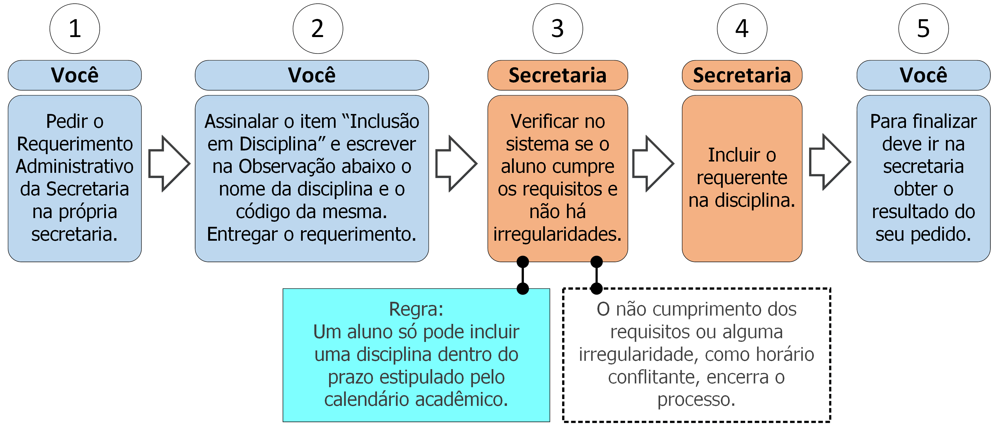

8. Inclusão em disciplina

8.1 Descrição
Após o início do período letivo você pode incluir disciplinas, respeitando seus pré-requisitos e horários em comparação às disciplinas na qual está previamente matriculado. Para isso deve seguir os seguintes passos:
- A. Peça o Requerimento Administrativo da Secretaria;
- B. Assinale o item “Inclusão de disciplina” e escreva no campo Observação o nome da disciplina que deseja incluir e seu código;
- C. Entregue o requerimento;
- D. A secretaria verificará se não há irregularidades que impeçam a inclusão (ver regra 1 na seção 8.3);
- E. A Secretaria incluirá a disciplina no seu histórico escolar;
- F. Vá à secretaria e procure saber sobre o resultado do seu requerimento (ver regra 2 na seção 8.3).
- Condição: Este processo deve ser utilizado apenas para situações extraordinárias. A inclusão em casos usuais deve ser realizada via Internet no Portal do Aluno.
8.2 Documentos necessários
Nenhum.
8.3 Regras
- 1. Período de Inclusão: A inclusão de disciplina só pode ser feita dentro do prazo estipulado pelo Calendário Acadêmico do período em questão.
- 2. Prazo de efetivação: A Secretaria tem até 5 dias úteis efetivar a inclusão.